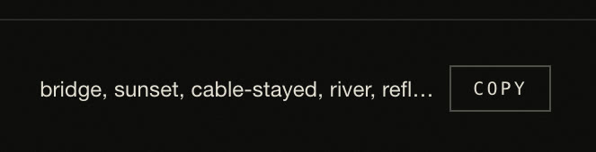

Guide · Stock footage
How to Prepare Stock Footage Faster (1,000 Clips in 3 Hours)
Where the hours go, seven ways to win them back by hand, and how 1,000 4K clips went from raw files to export in 3 hours 1 minute.

The short version
- Cull whole files before you trim anything.
- Use one look per camera, not a grade per clip.
- Do each step for every clip at once, not every step for one clip.
- Export overnight, at native size, in one queue.
- Keyword by shoot, then add a few words per clip.
By hand, prep averages about 2 minutes per clip, so 1,000 clips is 33+ hours. With Stock Shredder, the same 1,000 4K clips took 3 hours 1 minute, plus your review.
Stock footage prep takes longer than the shoot.
You can shoot a few hundred sellable moments in a day. Getting them online takes a week of evenings.
That's why most stock shooters have drives full of footage that never got uploaded. Not because it's bad. Because the prep never ends.
Here's where the time actually goes, how to cut it by hand, and what 1,000 clips look like when the repetitive parts run on their own.
Where the hours go.
Every clip goes through the same six jobs. None of them is hard. Together, they're about 2 minutes a clip.
| Job | Why it's slow by hand |
|---|---|
| Scrubbing | You watch everything, including the dead air between takes. |
| Trimming | An in and out for every moment, with handles, around every focus pull. |
| Grading | Log footage needs a normal look before most sites take it. |
| Culling | Shaky, broken and logo shots have to be spotted one by one. |
| Exporting | Each clip is its own file, its own range, its own queue item. |
| Naming and keywords | A title and a keyword list typed for every single clip. |
2 minutes doesn't sound like much. Multiply it by a drive. 500 clips is 16+ hours. 1,000 is 33+.
For the step-by-step version from card to upload, see raw footage to stock clips. Exporting in Premiere today? Here's how batch export compares.
Seven ways to go faster by hand.
Before any tool, these cut real time out of the job in Premiere Pro, Resolve or Final Cut.
- Cull files, not clips. Skim each file at 2x or faster and drop the ones with nothing usable before you set a single in point.
- Work in passes. Trim everything, then grade everything, then export everything. Switching jobs on every clip is where the minutes leak.
- One look per camera. Build a Rec 709 look for each camera and log profile once. Apply it to the whole shoot. Buyers grade it themselves anyway.
- Trim to one length. Pick a target, like 10 to 20 seconds, and stop debating each clip. Most sites take 5 to 60 (see the rules for Adobe Stock, Pond5 and Shutterstock).
- Use export presets. One saved preset per site, at native frame size and frame rate. No settings to check per clip.
- Export overnight. Queue the whole shoot before bed. Your computer works while you don't.
- Keyword by shoot. Write one base list per shoot (place, season, mood, gear), then add 3 to 5 words that are specific to each clip.
These help a lot. But every clip still needs its own in, out, export range, name and keywords. The 2 minutes shrinks. It doesn't go away.
The Stock Shredder way.
Stock Shredder runs on your Mac or Windows computer and does the repetitive jobs in one pass. You keep the parts that need your eye.

- Select. Point it at a folder. MP4, MOV, MXF, Blackmagic RAW and more.
- Shred. It finds the usable moments and trims them. Broken, empty and too-shaky clips get set aside. No scrubbing.
- Review. Approve or deny from the keyboard, and nudge a trim if you want. It remembers what you've reviewed, so you never see a clip twice.
- Send. Pick a look for ARRI, DJI, RED or Sony, or load your own LUT. Export ProRes up to 8K, graded, log, or both in one pass.
- Share. Every clip gets a clear name, its own folder and ready-to-paste keywords.

Most of the tricks above are built in. Trimming happens in one pass, one look covers the whole shoot, every clip exports as its own file, and the names and keywords are written for you.
1,000 clips in 3 hours, measured.
Real Sony FX6 and FX3 footage on a MacBook Pro M3 Pro, exported to an external SSD as graded ProRes 422 HQ 4K.
100 clips · 0 failed
500 clips · 0 failed
1,000 clips · 0 failed
Stock Shredder time is shred plus export. Review time not included. By hand: 2 minutes per clip average.
That's a full work week turned into an afternoon. And like the overnight export trick, you don't have to sit and watch it.

What to know before you start.
Stock Shredder handles the repetitive parts. A few things stay with you.
- You review. The times above don't include it. Keyboard shortcuts keep it quick, and Studio lets you approve from your phone.
- You pick what sells. It finds the usable shots. Your eye decides which ones are worth uploading.
- You upload. Names and keywords are ready to paste into each site.
- Check your format. Canon Cinema RAW Light and Nikon N-RAW aren't supported yet. RED and ARRIRAW work with the camera maker's free tools.
When by hand still makes sense.
- You only have a handful of clips this month.
- It's one hero shot that needs a full custom grade.
- Your footage is in a format Stock Shredder doesn't read yet.
For everything else, the fastest prep is the prep you don't do yourself. Your footage has value. It shouldn't sit on a drive.
FAQ
How long does it take to prepare stock footage?
By hand, about 2 minutes per clip on average once you count scrubbing, trimming, grading, exporting, naming and keywords. That's 3+ hours for 100 clips and 33+ hours for 1,000.
What is the fastest way to prepare stock footage?
Batch every step. Cull before you trim, use one look per camera, export overnight and keyword by shoot instead of by clip. Stock Shredder does the finding, trimming, grading, exporting and naming in one pass, so 1,000 4K clips took 3 hours 1 minute in our test, not counting review.
Should I grade every stock clip by hand?
Usually not. Buyers grade footage themselves. A clean, normal Rec 709 look per camera is enough for most clips. Save the custom grade for your few hero shots.
How many stock clips should I upload each week?
Whatever you can keep up every week. Steady uploads beat one big batch a year. Cutting prep time is what makes a bigger weekly number possible.
Does Stock Shredder upload clips for me?
No. It prepares the clips, names and keywords. You upload to each site yourself.
Does my footage leave my computer?
No. Your videos stay on your computer. A few small still frames from each shot go to an outside naming service so clips get names and keywords.